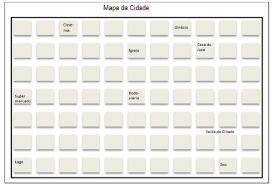
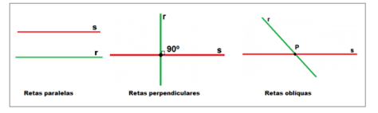
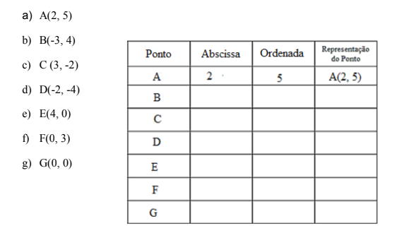

Capítulo 3
A INDÚSTRIA 4.0 E A MATEMÁTICA
ContextualizandoA partir da máquina a vapor desenvolvida por James Watt em 1769, houve um acentuado progresso em termos de automação de processos produtivos. A produção industrial em larga escala e os meios de transporte revolucionaram social e economicamente as relações humanas.
Até meados do século XX, o processo de produção foi baseado no emprego de máquinas projetadas especificamente para a fabricação em série de produtos de uma mesma característica, visando a uma elevada produtividade, volume e qualidade. Este modelo é denominado automação-rígida e foi bastante difundido pelo empresário Henry Ford no início do século.
O avanço tecnológico das últimas décadas teve reflexo direto na organização das indústrias que buscam minimizar seus custos industriais através da adoção de diversos modelos de produção. Neste contexto, destacam-se a automação programável, relativa à fabricação em série de pequenos e médios lotes de produtos, e a automação flexível, que refere à fabricação de lotes variáveis de produtos diversos.
Os robôs industriais têm sido muito utilizados nos processos de automação programável e flexível, pois são essencialmente máquinas capazes de realizar os mais diversos movimentos programados, adaptando-se às necessidades operacionais de determinadas tarefas e empregando garras e/ou ferramentas oportunamente selecionadas.
Segundo a Robotic Industries Association (RIA), o robô industrial é definido como um manipulador multifuncional reprogramável projetado para movimentar materiais, partes, ferramentas ou peças especiais, através de diversos movimentos programados, para o desempenho de uma variedade de tarefas” (RIVIN, 1988).
Quanto à estrutura Mecânica, diversas combinações de elementos (juntas e elos) podem ser realizadas para se obter a configuração desejada para um robô. De acordo com a Federação Internacional de Robótica (International Federation of Robotics - IFR)
O Robô de Coordenadas Cartesianas (também chamado de robô linear) é um robô industrial cujos três principais eixos de controle são lineares (eles se movem em uma linha reta ao invés de girar) e formam um ângulo reto em relação a cada eixo. Há três articulações deslizantes que correspondem ao movimento de cima para baixo, de dentro para fora e da direita para esquerda. O braço possui três juntas prismáticas, cujos eixos são coincidentes com um coordenador cartesiano XYZ.
Entre outras vantagens, este arranjo mecânico simplifica a solução de controle do braço robô. Esse tipo de robô possui três juntas prismáticas (PPP), resultando num movimento composto de três translações, cujos eixos de movimento são coincidentes com um sistema de coordenadas de referência cartesiano.
A classe geométrica de robôs Cartesianos (ou retangulares) é de geometria (x, y, z). É o modelo mais simples e, também, de fácil manuseio matemático. Esse robô é usado onde uma elevada precisão de posicionamento é necessária. Seu controle é simples devido ao movimento linear dos vínculos e devido ao momento de inércia da carga ser fixo por toda a área de atuação.
O volume de trabalho será um paralelepípedo, ou seja, o produto das distâncias dos três eixos. Portanto, se o comprimento máximo de cada elo for “L”, então o volume será L3. Este tipo de configuração é bastante usual em estruturas industriais como: Pórticos – empregados para transporte de cargas; Sistema de Armazenamento Automático – manipulação de caixas.
Devido à simplicidade do controle e rigidez mecânica, os robôs manipuladores cartesianos são utilizados para transporte e armazenamento de cargas. Os robôs cartesianos são usados para retirar e colocar peças no local de trabalho, aplicação de selante, operações de montagem, manuseio de máquinas ferramentas e soldagem a arco.
Por que esse tipo de robô se chama Robô de Coordenadas Cartesianas ou robô linear? (RE) CONSTRUINDO CONHECIMENTOSCaro aluno! Com a leitura do texto, você conheceu a importância da automação na Indústria 4.0 e o uso de robôs nos processos industriais. Conheceu, em especial, o Robô de Coordenadas Cartesianas e que a sua criação está relacionada à matemática e, em especial à Geometria. Você está convidado a pesquisar a origem dessa denominação e responder a questão proposta.
Conforma o texto que contextualiza o capítulo, esse tipo de robô possui três juntas prismáticas (PPP), resultando num movimento composto de três translações, cujos eixos de movimento são coincidentes com um sistema de coordenadas de referência cartesiano. O produto das distâncias dos três eixos possibilita que os volumes sejam paralelepípedos. Esse tipo de configuração é bastante usual em estruturas industriais como: Pórticos – empregados para transporte de cargas e Sistema de Armazenamento Automático – manipulação de caixas.
Vocabulário
Uma palavra pode ter diferentes sentidos, conforme o contexto em que ela está empregada. Translação pode significar o movimento realizado pela Terra, que diz respeito ao caminho que ela percorre ao redor do Sol.
Para compreender o Robô Cartesiano, no entanto, é importante saber o sentido da palavra translação em Matemática: translação é o movimento que um objeto realiza de um ponto a outro. É o deslocamento paralelo, em linha reta na mesma direção e no mesmo sentido, de um objeto ou figura.
O QUE É UM SISTEMA CARTESIANO?
O plano cartesiano é um sistema de coordenadas desenvolvido por René Descartes a quem é atribuída a designação. Esse sistema de coordenadas é formado por duas retas perpendiculares, chamadas de eixos cartesianos. Esses eixos determinam um único plano, assim, é possível determinar a localização, no sistema de coordenadas, de todos os pontos e, consequentemente, de qualquer objeto formado por esses pontos que estejam nesse plano.
Acesse o vídeo clicando no link a seguir:
Explore o plano cartesiano. Para isso, leia o texto, observe os mapas e realize com atenção as atividades propostas. Meu amigo Juca mudou-se para outra cidade e convidou-me a visitá-lo. Para que eu encontrasse facilmente a sua casa, ele me enviou um mapa com algumas indicações da sua cidade. Observe o mapa que Juca me deu:
Juca me disse: “Você desce na Rodoviária, anda três quarteirões para a direita e está na rua da minha casa (andar um quarteirão é percorrer de um quadrado para o outro à direita, à esquerda, subindo ou descendo). Juca continuou: Então, você sobe dois quarteirões e chega na minha casa. Não há como errar”.
De fato, não tive problemas para chegar na casa dele. Mas você imaginou se eu, não prestando atenção, tivesse trocado as indicações e, descendo na Rodoviária, andasse dois quarteirões à direita e, em seguida, tivesse subido três quarteirões? Onde é que eu teria ido parar?
Também foi muito fácil passear pela cidade. Descobri que tendo um ponto de referência, podia, partindo dele, ir para onde eu quisesse.
Para que eu pudesse encontrar mais facilmente esses lugares, resolvemos o Juca e eu, esquematizar o mapa da cidade, de tal forma que eu poderia ir a qualquer lugar, apenas seguindo o mapa.
Usamos, então, a Estação Rodoviária como ponto de referência. Para esquematizar a cidade, traçamos duas retas perpendiculares tendo a Estação Rodoviária no ponto de intersecção entre elas, conforme mostra o esquema a seguir.
RETOMANDO PARA PROSSEGUIR
Num plano ∝, duas retas r e s podem três posições quando se relacionam duas a duas: Elas podem ser paralelas, isto é, não ter um ponto comum (por mais que sejam prolongadas nunca se encontram) ou podem ter um ponto comum (cruzam-se em um ponto) e, nesse caso, são perpendiculares ou oblíquas. Observe os desenhos a seguir:
Duas retas são perpendiculares, quando se cruzam em um ponto, formando um ângulo de 90o. Observe que o plano foi nomeado com a letra grega ∝ (alfa) e as retas foram nomeadas com letras minúsculas do alfabeto r e s. O esquema da cidade de Juca:

Para traçar os itinerários, partimos da Estação Rodoviária, andando sempre primeiro para a direita ou esquerda e, depois, andando para cima e para baixo.
Para traçar os itinerários, partimos da Estação Rodoviária, andando sempre primeiro para a direita ou esquerda e, depois, andando para cima e para baixo.
Escreva os seguintes itinerários sempre partindo da Estação Rodoviária:

Observe que, nesse esquema, cada ponto de intersecção das linhas representa um quarteirão. Para distinguir os quarteirões à direita da Estação Rodoviária dos quarteirões à esquerda da Estação Rodoviária, foram usados números positivos à direita e números negativos à esquerda. Também foram numerados positivamente os quarteirões situados acima da Estação Rodoviária. Verificamos, então, que os itinerários podiam ser representados como um par de números. Olhe a casa do Juca: 3 quarteirões à direita da rodoviária e 2 quarteirões acima, o par 3 e 2.
A ordem desses números é também importante, você pode verificar que 2 quarteirões à direita e 3 acima nos conduzem a outro lugar. O par de números é também importante: dois quarteirões à direita e três acima nos conduzem à casa de Juca. O par de números deve, então, ser considerado em certa ordem. Trata-se, então, de um par ordenado de números. Indicamos este par ordenado: (3, 2). Observe que quando não se anda para esquerda nem para a direita, o par ordenado está sobre a reta vertical (o eixo das ordenadas) e o primeiro número do par é zero. Observe, ainda que quando não se sobe nem desce, o par ordenado está sobre a reta horizontal (o eixo das abscissas) e o segundo número do par é zero.
Observe os itinerários que você criou e, ao lado de cada um, na linha pontilhada escreva o par ordenado correspondente.
1 – O lago
2 – O Zoo
3 – O Igreja
4 – A Escola
5 – O Supermercado
Com os pares ordenados, localize os diferentes pontos no esquema da cidade.
Ao localizar os pares, você chegou aos locais corretos? Caso não tenha chegado, compare os pares ordenados que você criou com os que estão a seguir: lago (-5, -3), Zoo (4,-2), Igreja (0, 2), Escola (2, 3), Supermercado (-5, 0).
OS PARES ORDENADOS
Observe o plano cartesiano desenhado a seguir:
No plano, estão localizados dois pontos que correspondem aos pares ordenados S(2, 5) e T(-3, -2). Os pontos representados por pares ordenados são nomeados com as letras maiúsculas do nosso alfabeto (S e T).
Observe o ponto S. O segmento que une o ponto S ao eixo vertical é paralelo à reta horizontal e tem 2 unidades de comprimento. Chame de abscissa do ponto S o número 2. Ele indica que o ponto S está localizado duas unidades à DIREITA da linha vertical. O segmento que une o ponto S à reta horizontal é paralelo à reta vertical e tem 5 unidades de comprimento. Chame de ordenada do ponto S o número 5, porque está localizado cinco unidades ACIMA da linha horizontal.
Tome o ponto T, o segmento que une o ponto T à reta vertical é paralelo à reta horizontal e tem 3 unidades de comprimento. Chama-se abscissa do ponto T ao número -3, porque está localizado 3 unidades à ESQUERDA da linha vertical. O segmento que une o ponto T à reta horizontal é paralelo à reta vertical e tem 1 unidade de comprimento. Chamaremos de ordenada do ponto T ao número -1, porque está localizado 1 unidade ABAIXO da linha horizontal. Assim, a todo ponto do plano está associado um par de números, o primeiro chamado a abscissa, e o segundo chamado a ordenada do ponto. A abscissa e a ordenada do ponto são as coordenadas cartesianas desse ponto. Qualquer ponto do plano pode ser localizado através de suas coordenadas cartesianas.
Acesse o vídeo clicando no link a seguir:
OS EIXOS CARTESIANOS E OS QUADRANTES
Os eixos cartesianos são perpendiculares e formam um sistema ortogonal. A reta horizontal é chamada de eixo cartesiano das abscissas e a reta vertical é chamada de eixo cartesiano das ordenadas.
O plano está dividido em 4 quadrantes nomeados 1o, 2o, 3o e 4o no sentido anti-horário.

Um sistema é ortogonal quando é constituído por duas retas perpendiculares.
PRATICANDO: REFLEXÃO E AÇÃO1) Numere os eixos coordenados com números inteiros.
2) Localize no plano os pontos que correspondem aos pares ordenados e complete a tabela, determinando a abscissa e a ordenada do ponto:
3) Determine as coordenadas dos pontos assinalados na malha quadriculada.

O QUE APRENDI
Ao explorar o Plano Cartesiano criado por Renée Descartes, aprendi a localizar pontos no plano a partir de duas retas perpendiculares, chamadas eixos ortogonais. É um sistema em que, nos eixos perpendiculares, são marcados números inteiros ou números reais, o que possibilitam localizar pontos no plano, representados por pares ordenados. Compreendi a importância de conceitos matemáticos, como o Sistema de Coordenadas Cartesianas, nos avanço da ciência e da tecnologia, na medida que entendi que, o Robô chamado Cartesiano é composto por três hastes, de tal forma que de duas a duas formam um Plano Cartesiano e que as três hastes ajustadas possibilitam de forma rápida e precisa, o transporte e o armazenamento de produtos embalados em recipientes na forma de prismas.
Questões 1) e 2)

Questão 3)